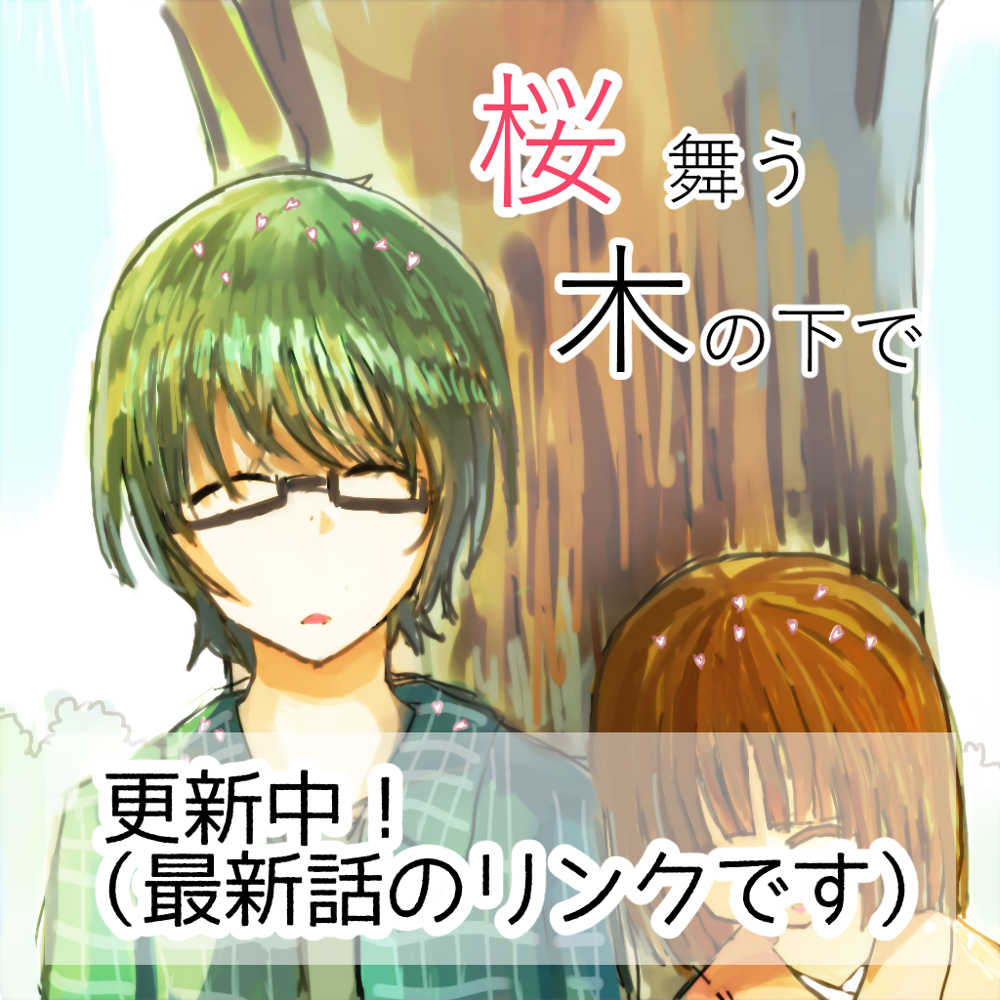
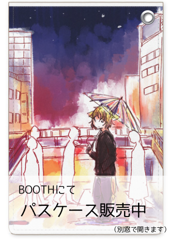

まんが
神様のお役目
桜舞う木の下で
短編
ここについて
周辺案内(リンク）


ひとこと
気がついたらお休みが終わりそうです
更新履歴
3/24 トップページをちょっと変更 3/17 桜舞う樹の下で 幕間-1- 更新 2/6 桜舞う木の下で 4話 26~28頁更新 2/3 桜舞う木の下で 4話 24~25頁更新 1/24 桜舞う木の下で 4話 21~23頁更新 1/16 「ここについて」ページのアイコンを変更 1/8 各漫画ページにツイートボタンを設置 桜舞う木の下で 4話 17~20頁更新 1/3 HPの置き場所をGit hubに変更 *** 2018年 **** 12/25 短編漫画 朝の色、君の匂い 追加 12/14 更新履歴をスクロールにするよう修正 12/8 桜舞う木の下で 4話 15~17頁更新 11/21 桜舞う木の下で 4話 12~14頁更新 10/30 桜舞う木の下で 4話 10~11頁更新 10/24 漫画の各作品ページをちょっと動くように修正しました 10/21 桜舞う木の下で 4話 7~9頁更新 8/5 桜舞木の下で 4話 4~6頁更新 7/1 桜舞木の下で 4話 更新開始。 5/19 スマートフォンで漫画を見る際に、ページ順序が逆になってしまうのを修正 5/13 上部メニューの「まんが」欄にカーソルを合わせた時、サブメニューが表示されるように変更 4/24 桜舞う木の下で 3話 最後の頁を更新 4/15 桜舞う木の下で 3話 追加6頁更新 4/15 漫画ビューアの調節 3/20 ページ作成
ツイート
@greentea_0123さんのツイート